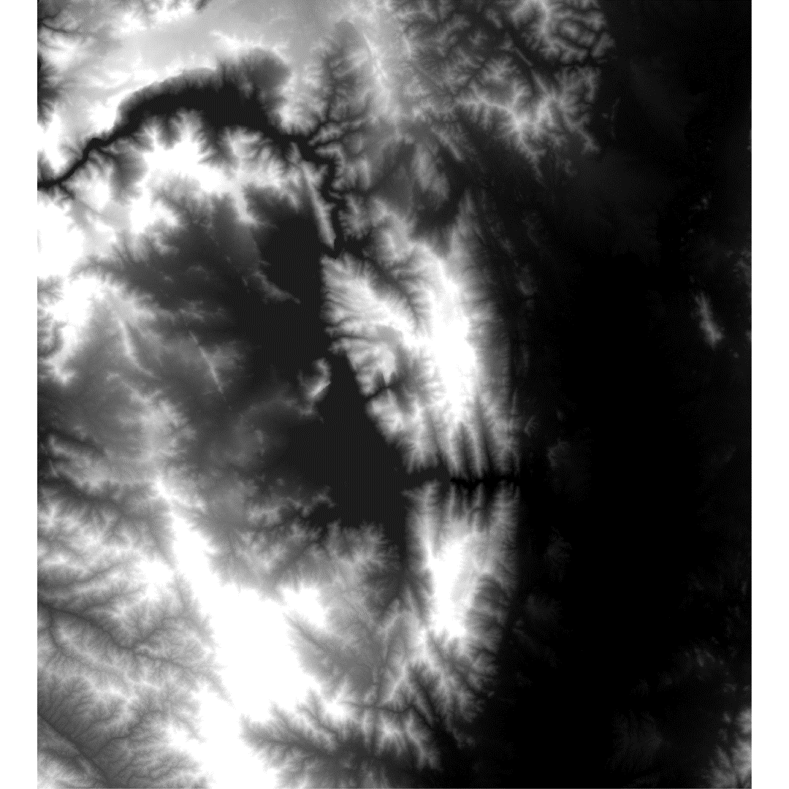

LEGO-style Topographic Map
This LEGO-style Topographic Map transforms real-world elevation data into a playful, block-based terrain visualization, inspired by the iconic look of LEGO bricks. By discretizing elevation into “blocks” and using vivid colors, the map creates a simplified yet visually engaging representation of the landscape.
Tools & Techniques Used:
- Elevation Data: SRTM DEM from NASA 🌍
- GIS Software: ArcGIS Pro & Raster Analysis Tools
- Visualization Techniques: Grid creation, zonal statistics, elevation reclassification, colorized block representation
- Creative Approach: Abstract block-based terrain, emphasizing elevation differences through distinct LEGO-inspired colors